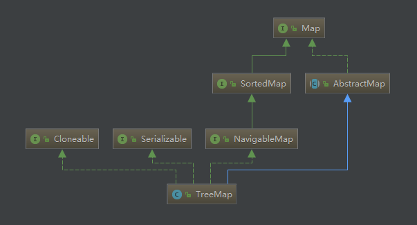
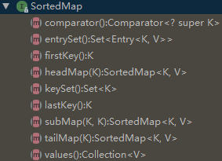
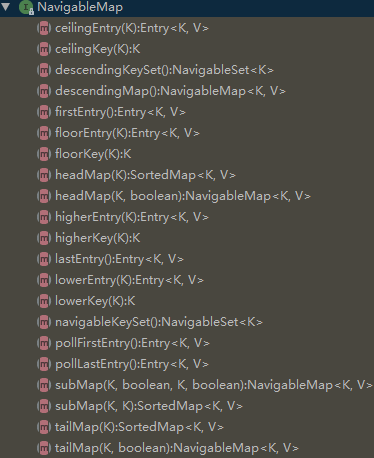
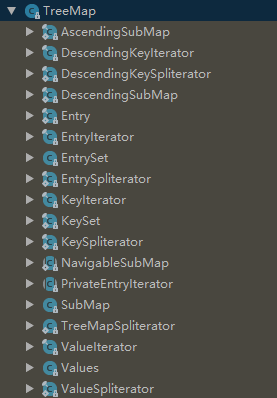

今天来看看Map家族的另一名大将——TreeMap。前面已经介绍过Map家族的两名大将，分别是HashMap，LinkedHashMap。HashMap可以高效查找和存储元素，LinkedHashMap可以在高效查找的基础上对元素进行有序遍历，那么TreeMap又有什么特点呢？别急别急，看完这篇你就知道了。
本篇主要从以下几个方面对TreeMap进行介绍：
1、TreeMap的特性以及使用栗子
2、TreeMap继承结构简介
3、TreeMap源码分析
TreeMap的特性以及使用栗子
\1. 键值不允许重复
\2. 默认会对键进行排序，所以键必须实现Comparable接口或者使用外部比较器
\3. 查找、移除、添加操作的时间复杂度为log(n)
\4. 底层使用的数据结构是红黑树
没错，又是让你欲仙欲死的红黑树，不过不要慌，跟之前介绍HashMap时的红黑树是一毛一样的，所以这一篇里，不打算再做介绍啦，如果对红黑树的内容有些遗忘了，可以动动小手，往前面翻一翻。
先来看一个TreeMap的使用小栗子。
public class TreeMapTest {
public static void main(String[] args){
TreeMap<String, Integer> grades = new TreeMap<>();
grades.put("Frank", 100);
grades.put("Alice", 95);
grades.put("Mary", 90);
grades.put("Bob", 85);
grades.put("Jack", 90);
System.out.println(grades);
System.out.println(grades.subMap("Bob", "Jack"));
System.out.println(grades.subMap("Bob", true, "Jack", true));
System.out.println(grades.ceilingEntry("Bob"));
System.out.println(grades.ceilingKey("Bob"));
System.out.println(grades.higherEntry("Bob"));
System.out.println(grades.higherKey("Bob"));
System.out.println(grades.headMap("Bob"));
System.out.println(grades.headMap("Bob", true));
System.out.println(grades.tailMap("Bob"));
System.out.println(grades.tailMap("Bob", true));
System.out.println(grades.containsKey("Bob"));
System.out.println(grades.containsValue(90));
System.out.println(grades.descendingMap());
System.out.println(grades.descendingKeySet());
}
}输出如下：
{Alice=95, Bob=85, Frank=100, Jack=90, Mary=90}
{Bob=85, Frank=100}
{Bob=85, Frank=100, Jack=90}
Bob=85
Bob
Frank=100
Frank
{Alice=95}
{Alice=95, Bob=85}
{Bob=85, Frank=100, Jack=90, Mary=90}
{Bob=85, Frank=100, Jack=90, Mary=90}
true
true
{Mary=90, Jack=90, Frank=100, Bob=85, Alice=95}
[Mary, Jack, Frank, Bob, Alice]可以看到，放入TreeMap中的元素默认按键值升序排列，这里的键值类型为String，使用String的CompareTo方法进行比较和排序。subMap返回当前Map的子Map，headMap和tailMap也是如此，
TreeMap继承结构简介
TreeMap继承自AbstractMap，实现了NavigableMap接口，继承关系图如下：

对于AbstractMap相信大家已经不陌生了，HashMap也是继承自AbstractMap，里面有对Map接口的一些默认实现。这里我们可以看到两个新的接口——SortedMap和NavigableMap。SortedMap接口继承自Map接口，从名字就能看出。SortedMap相比Map接口，憎加了排序的功能，内部的方法也不多，简单了解一下就好了

NavigableMap接口继承自SortedMap接口，主要提供一下导航方法：

说了这么多没啥营养的，接下来还是讲讲真正的干货吧。
TreeMap源码分析
JDK 1.8中的TreeMap源码有两千多行，还是比较多的。所以本文并不打算逐句分析所有的源码，而是挑选几个常用的内部类和方法进行分析。这些方法实现的功能分别是查找、遍历、插入、删除等，其他的方法小伙伴们有兴趣可以自己分析。TreeMap实现的核心部分是关于红黑树的实现，其绝大部分的方法基本都是对底层红黑树增、删、查操作的一个封装。就像前面所说，只要弄懂了红黑树原理，TreeMap 就没什么秘密了。关于红黑树的原理，可以参考前面关于HashMap红黑树的文章，本篇文章不会对此展开讨论。
TreeMap的主要数据结构是红黑树，而这红黑树结构的承载者便是内部类Entry，先来看看这个Entry类：
static final class Entry<K,V> implements Map.Entry<K,V> {
K key;
V value;
Entry<K,V> left;
Entry<K,V> right;
Entry<K,V> parent;
boolean color = BLACK;
/**
* 构造函数*/
Entry(K key, V value, Entry<K,V> parent) {
this.key = key;
this.value = value;
this.parent = parent;
}
public K getKey() {
return key;
}
public V getValue() {
return value;
}
public V setValue(V value) {
V oldValue = this.value;
this.value = value;
return oldValue;
}
public boolean equals(Object o) {
if (!(o instanceof Map.Entry))
return false;
Map.Entry<?,?> e = (Map.Entry<?,?>)o;
return valEquals(key,e.getKey()) && valEquals(value,e.getValue());
}
public int hashCode() {
int keyHash = (key==null ? 0 : key.hashCode());
int valueHash = (value==null ? 0 : value.hashCode());
return keyHash ^ valueHash;
}
public String toString() {
return key + "=" + value;
}
}其实内部的结构也很简单，主要有key，value和三个分别指向左孩子，右孩子，父节点的引用，以及用来标识颜色的color成员变量。再来看看TreeMap中的几个重要的成员变量：
/**
* 外部比较器
*/
private final Comparator<? super K> comparator;
private transient Entry<K,V> root;
/**
* 键值对数量
*/
private transient int size = 0;
private transient int modCount = 0;
private static final boolean RED = false;
private static final boolean BLACK = true;
/**
* 键值对集合
*/
private transient EntrySet entrySet;
/**
* 键的集合
*/
private transient KeySet<K> navigableKeySet;
/**
* 倒序Map
*/
private transient NavigableMap<K,V> descendingMap;comparator用于对map中的键进行排序，root指向红黑树的根节点，size表示键值对的数量，modCount相信已经不陌生了，表示内部结构被修改的次数，RED和BLACK是两个内部常量，即红黑两种颜色，false表示红，true表示黑。entrySet是键值对的集合，navigableKeySet是键的集合，最后一个descendingMap是当前map的一个倒序map。
在TreeMap中有很多内部类，可以先看图了解一下：

前前后后一共18个内部类，不过不要慌，其实里面跟迭代器相关的类就占了一半多（10个），跟子Map相关的类占4个，剩下4个就是跟内部集合相关的了。接下来还是一起来看看那些最常用的方法吧：
// 插入元素
public V put(K key, V value) {
TreeMap.Entry<K,V> t = root;
if (t == null) {
// 检查类型以及key是否为null
// 如果外部比较器为null，且key也为null则会抛出空指针异常
// 如果TreeMap未设置外部比较器，且传入的对象未实现Comparable接口
// 则会抛出ClassCastException异常
compare(key, key); // type (and possibly null) check
// 如果根节点不存在，则用传入的键值对信息生成一个根节点
root = new TreeMap.Entry<>(key, value, null);
size = 1;
modCount++;
return null;
}
int cmp;
TreeMap.Entry<K,V> parent;
// split comparator and comparable paths
Comparator<? super K> cpr = comparator;
if (cpr != null) {
do {
// 如果外部比较器不为空，则依次与各节点进行比较
parent = t;
cmp = cpr.compare(key, t.key);
if (cmp < 0)
// 小于则与左孩子比较
t = t.left;
else if (cmp > 0)
// 大于则与右孩子比较
t = t.right;
else
// 找到相等的key则替换其value
return t.setValue(value);
// 一直循环，直到待比较的节点为null
} while (t != null);
}
else {
// 如果外部比较器为null
// 如果key为null则抛出空指针
if (key == null)
throw new NullPointerException();
// 如果key未实现comparable接口则会抛出异常
@SuppressWarnings("unchecked")
Comparable<? super K> k = (Comparable<? super K>) key;
do {
// 跟上面逻辑类似，只是用key的compareTo方法进行比较，而不是用外部比较器的compare方法
parent = t;
cmp = k.compareTo(t.key);
if (cmp < 0)
t = t.left;
else if (cmp > 0)
t = t.right;
else
return t.setValue(value);
} while (t != null);
}
// 生成键值对
TreeMap.Entry<K,V> e = new TreeMap.Entry<>(key, value, parent);
// 连接到当前map的左孩子位置或者右孩子位置
if (cmp < 0)
parent.left = e;
else
parent.right = e;
// 插入后的调整
fixAfterInsertion(e);
size++;
modCount++;
return null;
}其实这里的逻辑跟HashMap中TreeNode的插入逻辑十分类似，也是先找到要插入的位置，然后再进行结构调整。这里的结构调整即红黑树的结构调整，在前面HashMap中已经详细介绍过了，这里就不重复介绍了，调整过程是完全一样的。
/**
* 插入后的调整
*/
private void fixAfterInsertion(TreeMap.Entry<K,V> x) {
// 将插入的节点初始化为红色节点
x.color = RED;
// 如果x不为null且x不是根节点，且x的父节点是红色，此时祖父节点一定为黑色
while (x != null && x != root && x.parent.color == RED) {
// 如果x的父节点为祖父节点的左孩子
if (parentOf(x) == leftOf(parentOf(parentOf(x)))) {
// y指向x的叔叔节点
TreeMap.Entry<K,V> y = rightOf(parentOf(parentOf(x)));
// 如果叔叔节点也是红色，则进行变色处理
if (colorOf(y) == RED) {
// 父节点变成黑色
setColor(parentOf(x), BLACK);
// 叔叔节点变成黑色
setColor(y, BLACK);
// 祖父节点变成黑色
setColor(parentOf(parentOf(x)), RED);
// 将x指向祖父节点，继续往上调整
x = parentOf(parentOf(x));
} else {
// 如果叔叔节点是黑色节点
// 如果x是父节点的右孩子
if (x == rightOf(parentOf(x))) {
// 将x指向其父节点
x = parentOf(x);
// 左旋
rotateLeft(x);
}
// 将x的父节点置为黑色
setColor(parentOf(x), BLACK);
// 将x的祖父节点置为红色
setColor(parentOf(parentOf(x)), RED);
// 将祖父节点右旋
rotateRight(parentOf(parentOf(x)));
}
} else {
// 这里类似操作
TreeMap.Entry<K,V> y = leftOf(parentOf(parentOf(x)));
if (colorOf(y) == RED) {
setColor(parentOf(x), BLACK);
setColor(y, BLACK);
setColor(parentOf(parentOf(x)), RED);
x = parentOf(parentOf(x));
} else {
if (x == leftOf(parentOf(x))) {
x = parentOf(x);
rotateRight(x);
}
setColor(parentOf(x), BLACK);
setColor(parentOf(parentOf(x)), RED);
rotateLeft(parentOf(parentOf(x)));
}
}
}
root.color = BLACK;
}说完了插入，再来看看删除操作。
// 删除节点
public V remove(Object key) {
// 先找到该key对应的键值对
TreeMap.Entry<K,V> p = getEntry(key);
if (p == null)
// 如果未找到则返回null
return null;
V oldValue = p.value;
// 找到后删除该键值对
deleteEntry(p);
return oldValue;
}
final TreeMap.Entry<K,V> getEntry(Object key) {
// 为了性能，卸载了比较器的版本
if (comparator != null)
return getEntryUsingComparator(key);
if (key == null)
throw new NullPointerException();
@SuppressWarnings("unchecked")
Comparable<? super K> k = (Comparable<? super K>) key;
TreeMap.Entry<K,V> p = root;
// 使用compareTo方法进行查找
while (p != null) {
int cmp = k.compareTo(p.key);
if (cmp < 0)
p = p.left;
else if (cmp > 0)
p = p.right;
else
return p;
}
return null;
}
// 使用比较器的getEntry版本。 从getEntry分离以获得性能。
// （对于大多数方法而言，这不值得做，这些方法较少依赖于比较器性能，但在这里是值得的。）
final TreeMap.Entry<K,V> getEntryUsingComparator(Object key) {
@SuppressWarnings("unchecked")
K k = (K) key;
Comparator<? super K> cpr = comparator;
// 使用比较器进行二分查找
if (cpr != null) {
TreeMap.Entry<K,V> p = root;
while (p != null) {
int cmp = cpr.compare(k, p.key);
if (cmp < 0)
p = p.left;
else if (cmp > 0)
p = p.right;
else
return p;
}
}
return null;
}
/**
* 删除节点，并调整红黑树以保持它的平衡
*/
private void deleteEntry(TreeMap.Entry<K,V> p) {
modCount++;
size--;
// 如果p的左右孩子均不为空，则找到p的后继节点，并且将p指向该后继节点
if (p.left != null && p.right != null) {
TreeMap.Entry<K,V> s = successor(p);
p.key = s.key;
p.value = s.value;
p = s;
} // p has 2 children
// 修复替补节点
// 用替补节点替换待删除的节点后，需要对其原来所在位置结构进行修复
TreeMap.Entry<K,V> replacement = (p.left != null ? p.left : p.right);
if (replacement != null) {
replacement.parent = p.parent;
if (p.parent == null)
root = replacement;
else if (p == p.parent.left)
p.parent.left = replacement;
else
p.parent.right = replacement;
p.left = p.right = p.parent = null;
// 如果p的颜色是黑色，则进行删除后的修复
if (p.color == BLACK)
fixAfterDeletion(replacement);
} else if (p.parent == null) {
root = null;
} else {
if (p.color == BLACK)
fixAfterDeletion(p);
if (p.parent != null) {
if (p == p.parent.left)
p.parent.left = null;
else if (p == p.parent.right)
p.parent.right = null;
p.parent = null;
}
}
}
/**
* 返回指定节点的后继节点
*/
static <K,V> TreeMap.Entry<K,V> successor(TreeMap.Entry<K,V> t) {
if (t == null)
return null;
else if (t.right != null) {
TreeMap.Entry<K,V> p = t.right;
// 如果右子树不为空，则找到右子树的最左节点作为后继节点
while (p.left != null)
p = p.left;
return p;
} else {
TreeMap.Entry<K,V> p = t.parent;
TreeMap.Entry<K,V> ch = t;
// 如果右子树为空且当前节点为其父节点的左孩子，则直接返回
// 如果为其父节点的右孩子，则一直往上找，直到找到根节点或者当前节点为其父节点的左孩子时，用其做为后继节点
while (p != null && ch == p.right) {
ch = p;
p = p.parent;
}
return p;
}
}
/**
* 进行删除后的结构修复
* @param x
*/
private void fixAfterDeletion(TreeMap.Entry<K,V> x) {
while (x != root && colorOf(x) == BLACK) {
// 如果x是父节点的左孩子
if (x == leftOf(parentOf(x))) {
// sib指向x的兄弟节点
TreeMap.Entry<K,V> sib = rightOf(parentOf(x));
// 如果sib是红色，则进行变色处理
if (colorOf(sib) == RED) {
// 兄弟节点改为黑色
setColor(sib, BLACK);
// 父节点改为红色
setColor(parentOf(x), RED);
// 父节点左旋
rotateLeft(parentOf(x));
// sib指向x的父节点的右孩子
sib = rightOf(parentOf(x));
}
// 如果sib的左孩子和右孩子都是黑色，则进行变色处理
if (colorOf(leftOf(sib)) == BLACK &&
colorOf(rightOf(sib)) == BLACK) {
// 将sib置为红色
setColor(sib, RED);
// x指向其父节点
x = parentOf(x);
} else {
// 如果sib的右孩子是黑色而左孩子是红色，则变色右旋
if (colorOf(rightOf(sib)) == BLACK) {
setColor(leftOf(sib), BLACK);
setColor(sib, RED);
rotateRight(sib);
sib = rightOf(parentOf(x));
}
// 变色左旋
setColor(sib, colorOf(parentOf(x)));
setColor(parentOf(x), BLACK);
setColor(rightOf(sib), BLACK);
rotateLeft(parentOf(x));
x = root;
}
} else { // symmetric
// 跟上面操作类似
TreeMap.Entry<K,V> sib = leftOf(parentOf(x));
if (colorOf(sib) == RED) {
setColor(sib, BLACK);
setColor(parentOf(x), RED);
rotateRight(parentOf(x));
sib = leftOf(parentOf(x));
}
if (colorOf(rightOf(sib)) == BLACK &&
colorOf(leftOf(sib)) == BLACK) {
setColor(sib, RED);
x = parentOf(x);
} else {
if (colorOf(leftOf(sib)) == BLACK) {
setColor(rightOf(sib), BLACK);
setColor(sib, RED);
rotateLeft(sib);
sib = leftOf(parentOf(x));
}
setColor(sib, colorOf(parentOf(x)));
setColor(parentOf(x), BLACK);
setColor(leftOf(sib), BLACK);
rotateRight(parentOf(x));
x = root;
}
}
}
setColor(x, BLACK);
}嗯，对比一下HashMap的删除操作，核心步骤是完全一样的，所以可以对照前面的HashMap红黑树详解进行食用。
最近这段时间烦心事比较多，对发展方向也考虑了很多，想做的事情很多，反而让我止步不前，不过很多事情是急不来的，还是好好写写博客，多做总结分享吧。
机会只留给有准备的人。